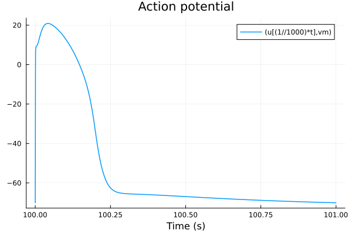
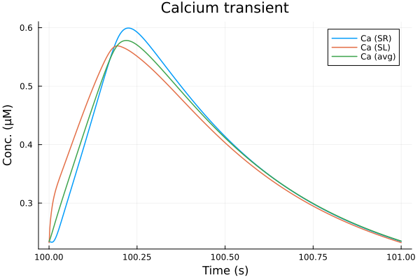
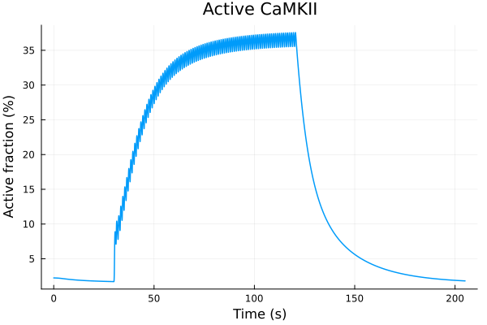
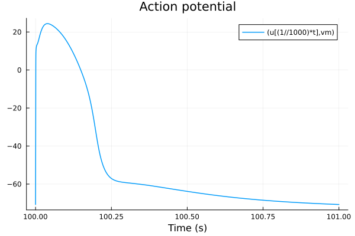
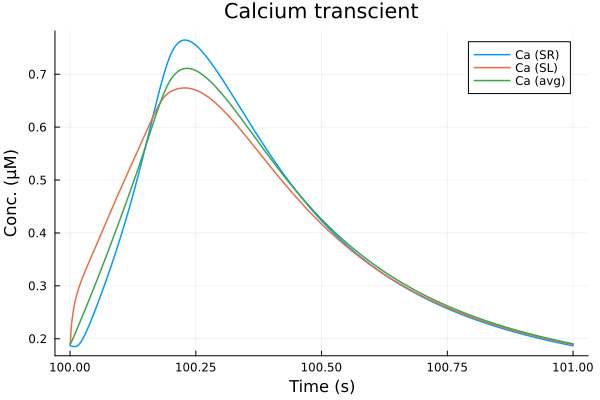
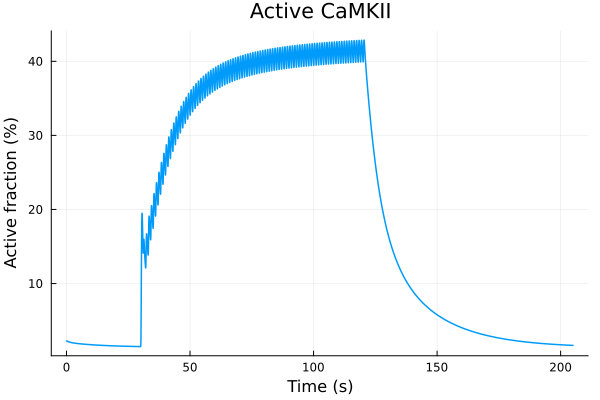
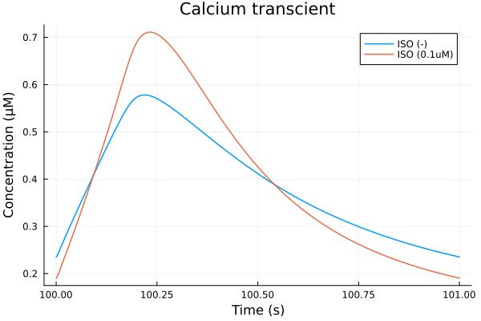
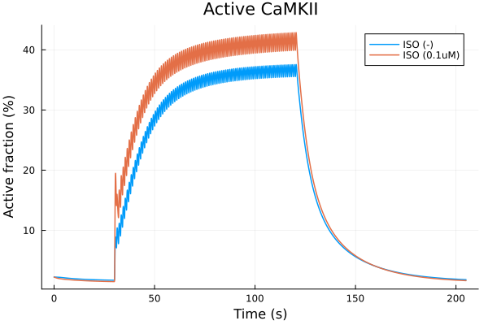
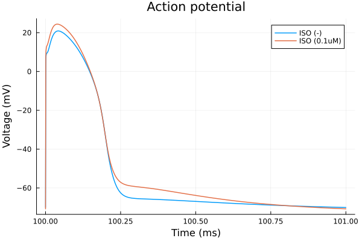
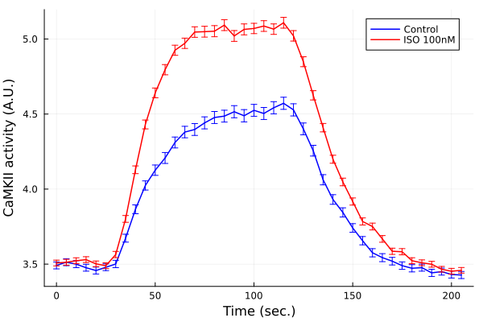

Effects of isoproterenol#
using ModelingToolkit
using OrdinaryDiffEq, SteadyStateDiffEq, DiffEqCallbacks
using Plots
using CSV
using DataFrames
using Dates
using CaMKIIModel
using CaMKIIModel: second, μM
Plots.default(lw=1.5)
Setup model#
sys = build_neonatal_ecc_sys(simplify=true, reduce_iso=true, reduce_camk=true)
tend = 205second
prob = ODEProblem(sys, [], tend)
stimstart = 30second
stimend = 120second
alg = KenCarp47()
KenCarp47(; linsolve = nothing, nlsolve = OrdinaryDiffEqNonlinearSolve.NLNewton{Rational{Int64}, Rational{Int64}, Rational{Int64}, Rational{Int64}}(1//100, 10, 1//5, 1//5, false, true, 0//1), precs = DEFAULT_PRECS, smooth_est = true, extrapolant = linear, controller = PI, autodiff = ADTypes.AutoForwardDiff(),)
Without isoproterenol#
@unpack Istim = sys
callback = build_stim_callbacks(Istim, stimend; period=1second, starttime=stimstart)
@time sol = solve(prob, alg; callback)
10.510353 seconds (28.92 M allocations: 1.312 GiB, 3.71% gc time, 88.01% compilation time)
retcode: Success
Interpolation: 3rd order Hermite
t: 4071-element Vector{Float64}:
0.0
0.019333123284849308
0.09098129546757994
0.20735582943983855
0.45611910276862533
1.0472562928406122
2.0342667657223696
3.451776641148454
6.733792423912806
12.450117081023194
⋮
153525.25012366346
158165.8598019807
163776.6411118618
169611.6642461836
176342.19489586214
183684.1140466068
191258.90946281631
199427.37350661293
205000.0
u: 4071-element Vector{Vector{Float64}}:
[0.0026, 830.0, 830.0, 0.00702, 0.966, 0.22156, 0.09243, 0.00188, 0.00977, 0.26081 … 0.12113, 0.12113, 0.12113, 0.12113, 0.12113, 0.12113, 0.12113, -68.79268, 13838.37602, 150952.75035000002]
[0.0025985659590295374, 829.9994975880693, 829.9999654017583, 0.007020208561323646, 0.9660018276402699, 0.2215639938807744, 0.09242766669618695, 0.001879826176081169, 0.009769882842069916, 0.2608055799112056 … 0.12113000000000405, 0.12113000000038378, 0.12113000001389383, 0.12113000037367234, 0.12113000811850358, 0.1211301421535992, 0.1211319185255175, -68.79732946186226, 13838.375711519551, 150952.7504077194]
[0.002593310524681686, 829.9976422525165, 829.9998348635061, 0.00702008986027517, 0.9660085993318799, 0.2215787945110049, 0.09241901973901424, 0.0018789042446514422, 0.009769459049732313, 0.26078941009382306 … 0.12113000089551408, 0.12113000693481112, 0.12113004704056851, 0.12113027926811751, 0.12113143375871603, 0.12113624253259858, 0.12115248970210647, -68.81607005265552, 13838.374513299192, 150952.75062244057]
[0.0025849478335103777, 829.9946506157202, 829.9996133960318, 0.007017234889558555, 0.9660195931792828, 0.22160283236040595, 0.09240497563401104, 0.0018766436937193197, 0.009768805322556195, 0.2607638707001999 … 0.12113010483012125, 0.12113038966346881, 0.12113131833063846, 0.12113403405679994, 0.12114109135582983, 0.12115723910142133, 0.12118951551963694, -68.84681913285226, 13838.372555328333, 150952.7509740238]
[0.00256770780104998, 829.9883445519497, 829.9990964774663, 0.0070030143052343926, 0.9660430731013478, 0.2216542075240971, 0.0923749578279845, 0.0018699196262940564, 0.00976754294689657, 0.2607122383588733 … 0.12113292110288297, 0.12113633873395534, 0.12114295934422185, 0.1211549441109046, 0.12117519662647316, 0.12120713813483533, 0.12125418995384044, -68.91207316777846, 13838.368384399068, 150952.7517373371]
[0.0025298083713907005, 829.9738229154025, 829.9976227528975, 0.006946470397388757, 0.9660987611411453, 0.22177624785138977, 0.09230364339951613, 0.0018505337694469416, 0.009765228548607825, 0.26060507831375035 … 0.12115849269665876, 0.12117335985880447, 0.12119414515426223, 0.12122229800810431, 0.12125925929399749, 0.12130632552358435, 0.12136450208851982, -69.06429960994137, 13838.358559292059, 150952.75361533565]
[0.0024748079782158957, 829.9509077855928, 829.9944193668179, 0.0068337541728754475, 0.9661914345949096, 0.2219798989175973, 0.09218462776986637, 0.0018178174419014681, 0.009763403076884485, 0.26047114911179464 … 0.121224541218447, 0.12125242557826559, 0.12128628091507473, 0.12132672249013034, 0.12137426379919634, 0.12142927821043341, 0.12149196513254243, -69.31024285744343, 13838.34240329337, 150952.75694915713]
[0.0024106893964811315, 829.9205247545176, 829.9883533251192, 0.006675512062656749, 0.9663239343003682, 0.22227216398019892, 0.09201383579531924, 0.0017738156907532244, 0.009765046552800477, 0.2603648729749554 … 0.12132150441596071, 0.1213585548820791, 0.12140052118634265, 0.12144759471003594, 0.12149988983034501, 0.12155743299711903, 0.1216201542687696, -69.64637448767432, 13838.319723120678, 150952.76215620188]
[0.002310655727734336, 829.8589858006806, 829.9689941817725, 0.006355039713677859, 0.9666286957812559, 0.22294828828976576, 0.09161908329520764, 0.0016855899094922325, 0.009786689200123853, 0.26041507667541997 … 0.12150439833798567, 0.12154722283384199, 0.12159304920072046, 0.1216418099553358, 0.12169340184085989, 0.12174768443532383, 0.12180447948880607, -70.35063788657428, 13838.2694938995, 150952.77598869594]
[0.0022289950402245105, 829.7704141396295, 829.923524981244, 0.005926150085676071, 0.9671554512230358, 0.22412560303273427, 0.09093422465365385, 0.0015688568862426045, 0.009873892913308327, 0.26104417804603025 … 0.12171274673876376, 0.12175152667167376, 0.12179171693004416, 0.12183318573340746, 0.12187579038290353, 0.12191937753328339, 0.12196378364408178, -71.35304509818071, 13838.18882346682, 150952.80529264064]
⋮
[0.002042782249961825, 784.5705928361865, 784.9343641366869, 0.0062857429610339985, 0.9997476285219716, 0.9996108819600831, 0.0015108660008012111, 0.002426439009309195, 0.0015675234985920228, 0.0011157701814115966 … 0.13694598688420098, 0.13694596415399937, 0.13694593696562782, 0.13694590539946194, 0.1369458695326783, 0.13694582943941114, 0.13694578519090012, -70.430824409181, 13607.749833006836, 151185.30233112013]
[0.002025975007874759, 784.6163365838507, 784.975712084629, 0.006308692511330311, 0.9997446880935221, 0.9997062624414007, 0.0015226265701695084, 0.0024361230542046487, 0.001573785829356944, 0.0011251534126157433 … 0.13663596988031096, 0.13663578906355425, 0.1366356064038825, 0.1366354218993225, 0.13663523554797258, 0.1366350473479995, 0.13663485729763397, -70.37723151711472, 13579.426508631257, 151213.6576494461]
[0.001996646756045745, 784.3627792024262, 784.7160349787146, 0.006335401714922441, 0.9997412411483092, 0.999734172546418, 0.0015363302060715427, 0.002447397493994921, 0.0015810714523994023, 0.0011360309269043134 … 0.13623415561766383, 0.1362338897000514, 0.13623362344659776, 0.13623335680900567, 0.1362330897408901, 0.1362328221976842, 0.13623255413655094, -70.31510224724522, 13545.998515545507, 151247.1533714861]
[0.0019623249198768636, 783.9403317537723, 784.2869668994391, 0.006362431269317961, 0.9997377231755968, 0.9997378359259563, 0.0015502379269452743, 0.00245881148875919, 0.0015884495451694459, 0.0011471355458626655 … 0.1358106196440921, 0.1358103200937484, 0.13581002090542973, 0.13580972201059466, 0.13580942334341797, 0.13580912484065658, 0.1358088264415242, -70.25249211840278, 13512.139339623418, 151281.09701808463]
[0.0019219897448593782, 783.3744083454333, 783.7134909839837, 0.00639294294049073, 0.9997337138514424, 0.9997354225164651, 0.001566002491975522, 0.002471700867704001, 0.0015967773659847982, 0.001159679080854188 … 0.13533011366144734, 0.1353298029287122, 0.13532949292787397, 0.13532918358089244, 0.13532887481282033, 0.1353285665516516, 0.1353282587281787, -70.18213292915172, 13474.185747617725, 151319.15383306387]
[0.001878990316432021, 782.7245669481048, 783.0557065812891, 0.0064255586625115, 0.9997293823003751, 0.9997313503264378, 0.0015829377999885463, 0.002485484826637301, 0.001605684519865354, 0.001173215752312983 … 0.134822932895499, 0.13482262280429513, 0.13482231363359, 0.13482200530178298, 0.13482169773050548, 0.13482139084446418, 0.1348210845712915, -70.10728981816796, 13434.084114116069, 151359.36895294566]
[0.0018365180658441733, 782.0471494870803, 782.3704791996149, 0.006458544300802494, 0.9997249530520704, 0.9997269430821422, 0.0016001571586320466, 0.0024994316026308917, 0.001614697348022826, 0.0011869691561100832 … 0.13432065713676397, 0.13432035241862705, 0.13432004873010603, 0.13431974598856616, 0.13431944411464694, 0.13431914303210213, 0.13431884266764876, -70.03198079056071, 13394.082755688238, 151399.48570823882]
[0.0017930492874452236, 781.3207468475136, 781.636102930607, 0.0064933841889838785, 0.9997202209587297, 0.9997221973027168, 0.0016184463726735686, 0.002514168848007442, 0.0016242200432762049, 0.0012015959628676961 … 0.133803040240129, 0.13380274309273635, 0.1338024470542611, 0.13380215204205553, 0.13380185797674682, 0.13380156478207678, 0.13380127238475042, -69.95285215574415, 13352.452891572513, 151441.23701638903]
[0.001764761902367621, 780.8304378388726, 781.1406117188527, 0.0065167240210892395, 0.999717019859629, 0.9997189832869456, 0.0016307574425667426, 0.0025240455006062786, 0.0016306023325556357, 0.0012114432486827916 … 0.13346383404221038, 0.1334635424065866, 0.13346325192125927, 0.1334629625038741, 0.13346267407533927, 0.1334623865596658, 0.13346209988381685, -69.90007814148895, 13324.920610871455, 151468.85017708494]
i = (sys.t / 1000, sys.vm)
plot(sol, idxs=i, tspan=(100second, 101second), title="Action potential", xlabel="Time (s)")

plot(sol, idxs=(sys.t / 1000, [sys.Cai_sub_SR, sys.Cai_sub_SL, sys.Cai_mean]), tspan=(100second, 101second), title="Calcium transient", xlabel="Time (s)", ylabel="Conc. (μM)", label=["Ca (SR)" "Ca (SL)" "Ca (avg)"])

plot(sol, idxs=(sys.t / 1000, sys.CaMKAct * 100), title="Active CaMKII", label=false, ylabel="Active fraction (%)", xlabel="Time (s)")

0.1uM isoproterenol#
prob2 = remake(prob, p=[sys.ISO => 0.1μM])
sol2 = solve(prob2, alg; callback)
retcode: Success
Interpolation: 3rd order Hermite
t: 4138-element Vector{Float64}:
0.0
0.019332211071584192
0.09097534627605569
0.20734339686524408
0.4561200538541287
1.0549952720719427
2.0687580593126613
3.5324261824253345
6.954473747659736
12.881140201769806
⋮
152270.482708526
157174.07587050938
162194.01343084572
168138.29627423352
174916.26987407374
181898.84288967986
189304.81131705493
197588.12256360063
205000.0
u: 4138-element Vector{Vector{Float64}}:
[0.0026, 830.0, 830.0, 0.00702, 0.966, 0.22156, 0.09243, 0.00188, 0.00977, 0.26081 … 0.12113, 0.12113, 0.12113, 0.12113, 0.12113, 0.12113, 0.12113, -68.79268, 13838.37602, 150952.75035000002]
[0.002598561776347308, 829.9994983969723, 830.0014907812235, 0.007020212947405008, 0.9660018275573545, 0.221563993694571, 0.0924276668078433, 0.0018798283012559313, 0.009769882789165586, 0.2608055790255411 … 0.12113000000000056, 0.12113000000008267, 0.12113000000364073, 0.1211300001166239, 0.12113000299821446, 0.12113006189494423, 0.1211309809540452, -68.79688468304944, 13838.37575462767, 150952.75040560117]
[0.0025932333906583892, 829.9976597572193, 830.0069923279007, 0.007020182507782679, 0.9660085988422271, 0.22157879333123556, 0.0924190204915213, 0.0018789474208576141, 0.009769457815727975, 0.26078938725640693 … 0.12113000020174947, 0.12113000185234848, 0.12113001474369577, 0.12113010200803159, 0.12113060640007198, 0.1211330317427475, 0.12114238287990785, -68.81397720473576, 13838.374716348011, 150952.75061240065]
[0.002584621446261353, 829.9947407323419, 830.0158577065781, 0.007017680221388922, 0.9660195923730465, 0.22160283004278358, 0.09240497731310347, 0.0018768406238241545, 0.009768798977675412, 0.26076374828883014 … 0.12113003007199945, 0.12113012844945044, 0.12113049616083327, 0.12113171992467786, 0.1211353044921302, 0.12114443083154028, 0.12116438512395097, -68.84205163448622, 13838.373018773336, 150952.75095089723]
[0.0025665030871097365, 829.9887756080547, 830.0345419613458, 0.007004853088813848, 0.9660430748851897, 0.22165420888269807, 0.09237495857236798, 0.0018706615190431772, 0.009767513260722714, 0.26071163727178975 … 0.12113109689132588, 0.12113262872712134, 0.12113588865795848, 0.121142310208923, 0.12115399268330551, 0.12117359583457635, 0.12120393253792847, -68.90160259182096, 13838.369406865842, 150952.7516853767]
[0.002524878616001687, 829.9758982053276, 830.07814410011, 0.006952675605532075, 0.9660994972023292, 0.22177785078777174, 0.09230271445722965, 0.0018527422088444531, 0.009765055027054551, 0.26060065813180305 … 0.12114357362996762, 0.12115176909538261, 0.12116376521507283, 0.12118067468437908, 0.12120363670655873, 0.12123369231137106, 0.12127164038451912, -69.0421184107563, 13838.360815589964, 150952.7535137264]
[0.0024610999647757185, 829.9585434198331, 830.1479502978362, 0.0068472036120339344, 0.9661946906443825, 0.22198703092009986, 0.09218048699222062, 0.001822209689064277, 0.009762833375314839, 0.26045565430474177 … 0.12118006281992987, 0.12119663497761281, 0.12121718646328616, 0.12124217405786955, 0.12127196546348168, 0.12130680044052825, 0.1213467555562161, -69.27157622080777, 13838.346581408403, 150952.75679928518]
[0.0023827586833013686, 829.9422438990155, 830.2409658671871, 0.0066990037339929405, 0.9663315006590419, 0.22228882452599166, 0.09200417115231563, 0.0017811002406865242, 0.009763716676849107, 0.26032881924894974 … 0.12123448815456443, 0.12125657408666769, 0.12128178469153823, 0.12131020885887851, 0.12134186045923348, 0.12137666702212292, 0.1214144608787314, -69.58534388478576, 13838.326681500257, 150952.76194966168]
[0.0022498315410024923, 829.9364424528658, 830.4298664467993, 0.0063983355059790605, 0.9666490840575152, 0.22299376432344578, 0.09159274697262061, 0.001698540535801268, 0.009783000857592001, 0.2603166532077402 … 0.12132652897086688, 0.12134992079665145, 0.12137464276885114, 0.12140056903109968, 0.1214275333078914, 0.12145532836849146, 0.1214837061769811, -70.2425024040955, 13838.282994292276, 150952.77573103318]
[0.0021239182944550357, 829.9982399691283, 830.6928613527689, 0.006003854581032526, 0.9671939916127574, 0.22421393887512645, 0.09088324181611296, 0.0015916044910949706, 0.009862701804147046, 0.2607890677215021 … 0.12137592664517365, 0.12139282572293235, 0.12140916126316063, 0.12142480441004651, 0.12143960641561441, 0.12145339981894898, 0.12146599978828725, -71.1550700755306, 13838.215505646505, 150952.80458617522]
⋮
[0.007314687500369285, 921.3111350425958, 922.8372442674171, 0.006216329537708636, 0.9997563697872099, 0.9995674489205065, 0.00147568736249867, 0.002397167116871176, 0.0015486035494283463, 0.0010878271778288668 … 0.1269073195631148, 0.12690715538826916, 0.1269069853538138, 0.12690680954289132, 0.12690662803535596, 0.12690644090793488, 0.12690624823438, -70.59411328185782, 13855.4476072141, 150927.44243964556]
[0.007222908185588393, 921.4901697336337, 922.997392431976, 0.006243336397303195, 0.9997529999609056, 0.9997032071128498, 0.001489281241844416, 0.002408552897815534, 0.0015559585586881338, 0.0010985560900909053 … 0.12644089018438737, 0.12644072850734295, 0.12644056118410138, 0.1264403882940635, 0.12644020991349011, 0.12644002611565572, 0.12643983697099379, -70.53036749025078, 13820.442136577743, 150962.49883419203]
[0.007132108627785776, 921.6620339612685, 923.1505571859487, 0.006270727254048933, 0.9997495493507628, 0.9997381113366618, 0.0015031331537502148, 0.0024201048896058787, 0.0015634241833135624, 0.0011095708614215344 … 0.12597799318180544, 0.1259778341445138, 0.12597766966734336, 0.12597749982610937, 0.12597732469363015, 0.12597714433987414, 0.12597695883209836, -70.46599490737445, 13785.406967559222, 150997.58514478136]
[0.007028583082888474, 921.8514954088539, 923.3186796524673, 0.006302819980314768, 0.9997454633663881, 0.9997449540510889, 0.0015194458293547694, 0.0024336452230385034, 0.0015721723973324607, 0.001122535599123386 … 0.12544833103064554, 0.12544817496632565, 0.1254480137015609, 0.1254478473080162, 0.12544767585452368, 0.1254474994072218, 0.12544731802968587, -70.39092616933593, 13744.943213096887, 151038.10815451713]
[0.006915552382402689, 922.0500067524752, 923.4938704461964, 0.006338953528065256, 0.9997408078707499, 0.999742676664397, 0.0015379203360179068, 0.002448897114682038, 0.0015820251283856274, 0.0011372511426387655 … 0.12486780463398992, 0.12486765205434168, 0.1248674945287114, 0.12486733212441542, 0.12486716490611023, 0.12486699293592114, 0.12486681627356655, -70.30685771442741, 13700.121315673558, 151082.9959404458]
[0.006804459843892478, 922.2361636603415, 923.6570847389236, 0.006375667093786605, 0.9997360201470812, 0.9997382835800486, 0.0015568059542883585, 0.0024644027648661427, 0.0015920469986001622, 0.0011523065215394495 … 0.12429479326753064, 0.12429464424125662, 0.12429449052582989, 0.12429433218417815, 0.12429416927674272, 0.12429400186160057, 0.12429382999457901, -70.22192860928003, 13655.370303292437, 151127.8129868481]
[0.006692241743164678, 922.4148307355138, 923.8125540136514, 0.006414030167680726, 0.9997309526604555, 0.9997332832916804, 0.0015766664513439967, 0.002480613059635259, 0.0016025195294395711, 0.0011680748508272937 … 0.1237135647751763, 0.12371341948438651, 0.12371326975673476, 0.12371311565089439, 0.12371295722321982, 0.12371279452786041, 0.12371262761686755, -70.13370024196071, 13609.434645284739, 151173.81665812188]
[0.006573203256423282, 922.5934983656683, 923.9665888756803, 0.006456227899139574, 0.9997253010148334, 0.9997276295977581, 0.0015986588418946185, 0.002498452997476788, 0.0016140477947282998, 0.0011856577969874618 … 0.12309422660180051, 0.12309408550412893, 0.1230939402382933, 0.12309379085847655, 0.12309363741671984, 0.12309347996302766, 0.12309331854546665, -70.03725612209726, 13559.858385532909, 151223.46657855329]
[0.006472169342883039, 922.7358937568738, 924.0880576542269, 0.006493344733519048, 0.9997202628390554, 0.9997225836604184, 0.0016181313950675384, 0.0025141532138515175, 0.0016241926698844045, 0.00120123018218663 … 0.12256630383905626, 0.1225661664615704, 0.12256602513985008, 0.12256587992439215, 0.12256573086369729, 0.12256557800436807, 0.12256542139120086, -69.95294083205002, 13517.057904842619, 151266.33084828962]
plot(sol2, idxs=(sys.t / 1000, sys.vm), tspan=(100second, 101second), title="Action potential", xlabel="Time (s)")

plot(sol2, idxs=(sys.t / 1000, [sys.Cai_sub_SR, sys.Cai_sub_SL, sys.Cai_mean]), tspan=(100second, 101second), title="Calcium transcient", xlabel="Time (s)", ylabel="Conc. (μM)", label=["Ca (SR)" "Ca (SL)" "Ca (avg)"])

plot(sol2, idxs=(sys.t / 1000, sys.CaMKAct * 100), title="Active CaMKII", label=false, ylabel="Active fraction (%)", xlabel="Time (s)")

Comparison#
i = (sys.t / 1000, sys.Cai_mean)
tspan = (100second, 101second)
plot(sol, idxs=i, title="Calcium transcient", lab="ISO (-)"; tspan)
plot!(sol2, idxs=i, lab="ISO (0.1uM)", xlabel="Time (s)", ylabel="Concentration (μM)"; tspan)

savefig("iso-caT.pdf")
"/home/github/actions-runner-1/_work/camkii-cardiomyocyte-model/camkii-cardiomyocyte-model/.cache/docs/iso-caT.pdf"
i = (sys.t / 1000, sys.CaMKAct * 100)
plot(sol, idxs=i, title="Active CaMKII", lab="ISO (-)")
plot!(sol2, idxs=i, lab="ISO (0.1uM)", ylabel="Active fraction (%)", xlabel="Time (s)")

savefig("iso-camkact.pdf")
"/home/github/actions-runner-1/_work/camkii-cardiomyocyte-model/camkii-cardiomyocyte-model/.cache/docs/iso-camkact.pdf"
i = (sys.t / 1000, sys.vm)
tspan = (100second, 101second)
plot(sol, idxs=i, title="Action potential", lab="ISO (-)"; tspan)
plot!(sol2, idxs=i, lab="ISO (0.1uM)", xlabel="Time (ms)", ylabel="Voltage (mV)"; tspan)

Experimental data#
chemicaldf = CSV.read(joinpath(@__DIR__, "data/CaMKAR-chemical.csv"), DataFrame)
ts = Dates.value.(chemicaldf[!, "Time"]) ./ 10^9
ctl = chemicaldf[!, "Ctrl Mean"]
ctl_error = chemicaldf[!, "Ctrl SD"] ./ sqrt.(chemicaldf[!, "Ctrl N"])
iso = chemicaldf[!, "isoproterenol 100nM Mean"]
iso_error = chemicaldf[!, "isoproterenol 100nM SD"] ./ sqrt.(chemicaldf[!, "isoproterenol 100nM N"])
plot(ts, ctl, yerr=ctl_error, lab="Control", color=:blue, markerstrokecolor=:blue)
plot!(ts, iso, yerr=iso_error, lab="ISO 100nM", color=:red, markerstrokecolor=:red)
plot!(xlabel="Time (sec.)", ylabel="CaMKII activity (A.U.)")

savefig("iso-exp.pdf")
"/home/github/actions-runner-1/_work/camkii-cardiomyocyte-model/camkii-cardiomyocyte-model/.cache/docs/iso-exp.pdf"
This notebook was generated using Literate.jl.